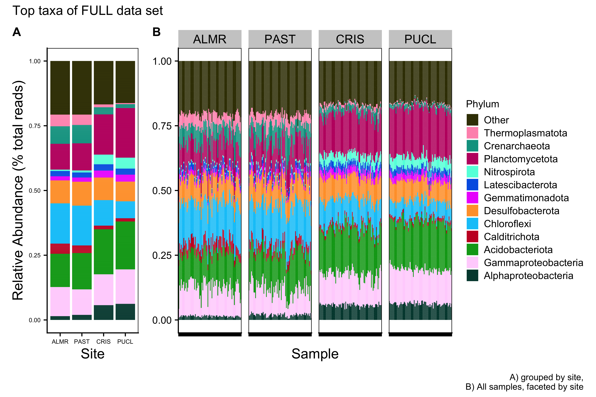
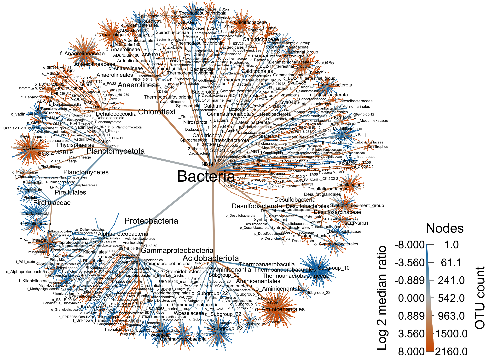

Hit the Hide Code button to hide the R code (shown by default).
Synopsis
This workflow contains taxonomic diversity assessments. In order to run the workflow, you either need to first run the DADA2 Workflow and then the Data Preparation workflow or begin with the output files from the Data Preparation and PIME workflows. See the Data Availability page for complete details.
In this workflow we will look at the
By Phyla
Bar charts of Major Taxa
For broad taxonomic comparisons, we use the the unfiltered data sets.
Detailed Bar chart workflow
To create a bar chart by Phylum and Proteobacteria classes, we perform the following steps:
- Get all Class-level Proteobacteria names
ssu_data_sets <- c("ssu_ps_work_merge", "ssu_ps_work_merge_otu",
"ssu_ps_work", "ssu_ps_work_otu")
for (i in ssu_data_sets) {
tmp_name <- purrr::map_chr(i, ~paste0(., "_proteo"))
tmp_get <- get(i)
tmp_df <- subset_taxa(tmp_get, Phylum == "Proteobacteria")
assign(tmp_name, tmp_df)
print(tmp_name)
tmp_get_taxa <- get_taxa_unique(tmp_df,
taxonomic.rank = rank_names(tmp_df)[3],
errorIfNULL=TRUE)
print(tmp_get_taxa)
rm(list = ls(pattern = "tmp_"))
rm(list = ls(pattern = "_proteo"))
}- Replace Phylum == Proteobacteria with the Class name.
for (j in ssu_data_sets) {
tmp_name <- purrr::map_chr(j, ~paste0(., "_proteo_clean"))
tmp_get <- get(j)
tmp_clean <- data.frame(tax_table(tmp_get))
for (i in 1:nrow(tmp_clean)){
if (tmp_clean[i,2] == "Proteobacteria" & tmp_clean[i,3] == "Alphaproteobacteria"){
phylum <- base::paste("Alphaproteobacteria")
tmp_clean[i, 2] <- phylum
} else if (tmp_clean[i,2] == "Proteobacteria" & tmp_clean[i,3] == "Gammaproteobacteria"){
phylum <- base::paste("Gammaproteobacteria")
tmp_clean[i, 2] <- phylum
} else if (tmp_clean[i,2] == "Proteobacteria" & tmp_clean[i,3] == "Zetaproteobacteria"){
phylum <- base::paste("Zetaproteobacteria")
tmp_clean[i, 2] <- phylum
} else if (tmp_clean[i,2] == "Proteobacteria" & tmp_clean[i,3] == "p_Proteobacteria"){
phylum <- base::paste("p_Proteobacteria")
tmp_clean[i, 2] <- phylum
}
}
tax_table(tmp_get) <- as.matrix(tmp_clean)
rank_names(tmp_get)
assign(tmp_name, tmp_get)
print(c(tmp_name, tmp_get))
print(length(get_taxa_unique(tmp_get,
taxonomic.rank = rank_names(tmp_get)[2],
errorIfNULL=TRUE)))
tmp_path <- file.path("files/trepo/taxa/rdata/")
saveRDS(tmp_get, paste(tmp_path, j, "_clean.rds", sep = ""))
rm(list = ls(pattern = "tmp_"))
}
rm(class, order, phylum)
objects(pattern="_proteo_clean")- Choose the number of taxa to display and the taxonomic level. Aggregate the rest into Other.
top_hits <- 12
top_level <- "Phylum"
for (i in ssu_data_sets){
tmp_get <- get(i)
tmp_otu <- data.frame(t(otu_table(tmp_get)))
tmp_otu[] <- lapply(tmp_otu, as.numeric)
tmp_otu <- as.matrix(tmp_otu)
tmp_clean_name <- purrr::map_chr(i, ~ paste0(., "_proteo_clean"))
tmp_get_clean <- get(tmp_clean_name)
tmp_tax <- as.matrix(data.frame(tax_table(tmp_get_clean)))
tmp_samples <- data.frame(sample_data(tmp_get_clean))
tmp_clean_name <- purrr::map_chr(i, ~paste0(., "_clean_", top_level))
tmp_clean_df <- merge_phyloseq(otu_table(tmp_otu, taxa_are_rows = TRUE),
tax_table(tmp_tax, tmp_tax),
sample_data(tmp_samples))
assign(tmp_clean_name, tmp_clean_df)
tmp_agg_name <- purrr::map_chr(i, ~paste0(., "_clean_", top_level, "_agg"))
tmp_agg_df <- microbiome::aggregate_top_taxa(tmp_clean_df,
top = top_hits,
level = top_level)
assign(tmp_agg_name, tmp_agg_df)
rm(list = ls(pattern = "tmp_"))
}
objects(pattern = "_agg")Next, we need to set the order of the taxa to display in the plots. This must be done manually, probably.
ssu_ps_work_merge_clean_Phylum_agg_order <- c("Alphaproteobacteria", "Gammaproteobacteria", "Acidobacteriota", "Calditrichota", "Chloroflexi", "Desulfobacterota", "Gemmatimonadota", "Latescibacterota", "Nitrospirota", "Planctomycetota", "Crenarchaeota", "Thermoplasmatota", "Other")
ssu_ps_work_clean_Phylum_agg_order <- c("Alphaproteobacteria", "Gammaproteobacteria", "Acidobacteriota", "Calditrichota", "Chloroflexi", "Desulfobacterota", "Gemmatimonadota", "Latescibacterota", "Nitrospirota", "Planctomycetota", "Crenarchaeota", "Thermoplasmatota", "Other")- Now, transform the data to relative abundance.
for (i in objects(pattern="_agg$")) {
tmp_name <- purrr::map_chr(i, ~paste0(., "_tax"))
tmp_agg <- purrr::map_chr(i, ~paste0(., "_order"))
tmp_get <- get(i)
tmp_get_agg <- get(tmp_agg)
tmp_df <- tmp_get %>%
transform_sample_counts(function(x) {x/sum(x)} ) %>%
psmelt()
tmp_df[[top_level]] <- gdata::reorder.factor(tmp_df[[top_level]],
new.order = rev(tmp_get_agg))
tmp_df <- tmp_df %>% dplyr::arrange(get(top_level))
assign(tmp_name, tmp_df)
print(c(i, tmp_name, tmp_agg))
rm(list = ls(pattern = "tmp_"))
}
objects(pattern = "_tax")- Plot the data for a single phyloseq object. Here you use an aggragated tax file.
# SOME COLOR PALETTES
fifteen <- c("#68023F", "#008169", "#EF0096", "#00DCB5", "#FFCFE2", "#003C86", "#9400E6", "#009FFA", "#FF71FD", "#7CFFFA", "#6A0213", "#008607", "#F60239", "#00E307", "#FFDC3D")
fifteen_alt <- c("#00463C", "#C00B6F", "#00A090", "#FF95BA", "#5FFFDE", "#590A87", "#0063E5", "#ED0DFD", "#00C7F9", "#FFD5FD", "#3D3C04", "#C80B2A", "#00A51C", "#FFA035", "#9BFF2D")
twelve_alt <- c("#006A5E", "#ED0D88", "#00BDA9", "#FFC4D4", "#0058CC", "#D208FB", "#FF66FD", "#00EFF9", "#156D03", "#009719", "#00C61B", "#00FB1D")
twelve <- c("#9F0162", "#009F81", "#FF5AAF", "#00FCCF", "#8400CD", "#008DF9", "#00C2F9", "#FFB2FD", "#A40122", "#E20134", "#FF6E3A", "#FFC33B")tmp_select <- ssu_ps_work_merge_clean_Phylum_agg_tax
tmp_select$SITE <- factor(tmp_select$SITE, levels = c("ALMR", "PAST", "CRIS", "PUCL"))
ssu_ps_work_merge_Phylum_plot <- ggplot(tmp_select,
aes(x = factor(SITE),
y = Abundance, fill = get(top_level))) +
geom_bar(stat = "identity", position = "fill") +
scale_fill_manual(values = ssu_colvec.tax) +
#scale_x_discrete("Temperature", expand = waiver(), position = "bottom", drop = FALSE) +
theme_cowplot() +
guides(fill = guide_legend(title = top_level)) +
#guides(fill = guide_legend(reverse = FALSE, keywidth = 1, keyheight = 1)) +
ylab("Relative Abundance (% total reads)") + xlab("Site") +
theme(panel.grid.major = element_blank(), panel.grid.minor = element_blank(),
panel.background = element_rect(fill = "transparent", colour = NA),
plot.background = element_rect(fill = "transparent", colour = NA),
panel.border = element_rect(fill = NA, color = "black"),
legend.position = "none",
axis.text = element_text(size = 6),
axis.title = element_text(size = 12))
ssu_ps_work_merge_Phylum_plot- Plot the data for a multiple phyloseq objects. Here again you use an aggregated tax file. This code can be used to generate plots for multiple data frames by adding the base phyloseq names to the
ssu_split_dfvariable. This code will also facet the plots by a metadata variable. If you do not want to facet remove the line beginning withfacet_grid.
#ssu_split_df <- c("ssu_ps_work", "ssu_ps_work_otu", "ssu_ps_pime", "ssu_ps_pime_otu")
ssu_split_df <- c("ssu_ps_work_merge")
for (i in ssu_split_df) {
tmp_level_get <- get(i)
tmp_level <- data.frame(sample_data(tmp_level_get))
tmp_level <- tmp_level[order(tmp_level$SITE), ]
tmp_level <- as.vector(tmp_level$SamName)
tmp_agg_name <- purrr::map_chr(i, ~paste0(., "_clean_", top_level, "_agg_tax"))
tmp_get <- get(tmp_agg_name)
tmp_df <- reshape::melt(tmp_get, id.vars = c("Sample", "SITE", "Abundance", "Phylum"))
## THIS next line reorders the facet
tmp_df$SITE_r <- factor(tmp_df$SITE, levels=c("ALMR", "PAST", "CRIS", "PUCL"))
tmp_plot_name <- purrr::map_chr(i, ~paste0(., "_", top_level, "_melt_plot"))
tmp_plot <- ggplot(tmp_df,
aes(x = Sample,
y = Abundance, fill = get(top_level))) +
facet_grid(. ~SITE_r, scale = "free_x", space = "free_x") +
geom_bar(stat = "identity", position = "fill") +
scale_fill_manual(values = ssu_colvec.tax) +
#scale_x_discrete("Treatment", expand = waiver(),
# position = "bottom", drop = FALSE, limits = tmp_level) +
theme_cowplot() +
guides(fill = guide_legend(title = top_level, reverse = FALSE,
keywidth = 0.9, keyheight = 0.9)) +
ylab(NULL) +
theme(panel.grid.major = element_blank(), panel.grid.minor = element_blank(),
panel.background = element_rect(fill = "transparent", colour = NA),
plot.background = element_rect(fill = "transparent", colour = NA),
panel.border = element_rect(fill = NA, color = "black"),
legend.text = element_text(size = 10),
legend.title = element_text(size = 10),
legend.position = "right",
#legend.key.size = unit(1.5, "cm"),
axis.text.y = element_text(size = 10),
axis.text.x = element_text(size = 0, angle = 90),
strip.text = element_text(size = 12, angle = 0),
axis.title = element_text(size = 10)) + ylab(NULL)
assign(tmp_plot_name, tmp_plot)
rm(list = ls(pattern = "tmp_"))
}
ssu_ps_work_merge_Phylum_melt_plot- Finally we use the
patchworkpackage to combine the two plots and customize the look.
Repeat for full data set.
tmp_select <- ssu_ps_work_clean_Phylum_agg_tax
tmp_select$SITE <- factor(tmp_select$SITE, levels = c("ALMR", "PAST", "CRIS", "PUCL"))
ssu_ps_work_Phylum_plot <- ggplot(tmp_select,
aes(x = factor(SITE),
y = Abundance, fill = get(top_level))) +
geom_bar(stat = "identity", position = "fill") +
scale_fill_manual(values = ssu_colvec.tax) +
#scale_x_discrete("Temperature", expand = waiver(), position = "bottom", drop = FALSE) +
theme_cowplot() +
guides(fill = guide_legend(title = top_level)) +
#guides(fill = guide_legend(reverse = FALSE, keywidth = 1, keyheight = 1)) +
ylab("Relative Abundance (% total reads)") + xlab("Site") +
theme(panel.grid.major = element_blank(), panel.grid.minor = element_blank(),
panel.background = element_rect(fill = "transparent", colour = NA),
plot.background = element_rect(fill = "transparent", colour = NA),
panel.border = element_rect(fill = NA, color = "black"),
legend.position = "none",
axis.text = element_text(size = 6),
axis.title = element_text(size = 12))
ssu_ps_work_Phylum_plot#ssu_split_df <- c("ssu_ps_work", "ssu_ps_work_otu", "ssu_ps_pime", "ssu_ps_pime_otu")
ssu_split_df <- c("ssu_ps_work")
for (i in ssu_split_df) {
tmp_level_get <- get(i)
tmp_level <- data.frame(sample_data(tmp_level_get))
tmp_level <- tmp_level[order(tmp_level$SITE), ]
tmp_level <- as.vector(tmp_level$SamName)
tmp_agg_name <- purrr::map_chr(i, ~paste0(., "_clean_", top_level, "_agg_tax"))
tmp_get <- get(tmp_agg_name)
tmp_df <- reshape::melt(tmp_get, id.vars = c("Sample", "SITE", "Abundance", "Phylum"))
## THIS next line reorders the facet
tmp_df$SITE_r <- factor(tmp_df$SITE, levels=c("ALMR", "PAST", "CRIS", "PUCL"))
tmp_plot_name <- purrr::map_chr(i, ~paste0(., "_", top_level, "_melt_plot"))
tmp_plot <- ggplot(tmp_df,
aes(x = Sample,
y = Abundance, fill = get(top_level))) +
facet_grid(. ~SITE_r, scale = "free_x", space = "free_x") +
geom_bar(stat = "identity", position = "fill") +
scale_fill_manual(values = ssu_colvec.tax) +
#scale_x_discrete("Treatment", expand = waiver(),
# position = "bottom", drop = FALSE, limits = tmp_level) +
theme_cowplot() +
guides(fill = guide_legend(title = top_level, reverse = FALSE,
keywidth = 0.9, keyheight = 0.9)) +
ylab(NULL) +
theme(panel.grid.major = element_blank(), panel.grid.minor = element_blank(),
panel.background = element_rect(fill = "transparent", colour = NA),
plot.background = element_rect(fill = "transparent", colour = NA),
panel.border = element_rect(fill = NA, color = "black"),
legend.text = element_text(size = 10),
legend.title = element_text(size = 10),
legend.position = "right",
#legend.key.size = unit(1.5, "cm"),
axis.text.y = element_text(size = 10),
axis.text.x = element_text(size = 0, angle = 90),
strip.text = element_text(size = 12, angle = 0),
axis.title = element_text(size = 10)) + ylab(NULL)
assign(tmp_plot_name, tmp_plot)
rm(list = ls(pattern = "tmp_"))
}
ssu_ps_work_Phylum_melt_plotFull Data Set

Merged Data Set

Major Taxa by Family
We can also look at the relative abundance of groups within dominant Phyla. This code only works for multiple taxa from a single phyloseq object. For this section, we only present the data for the merged data set.
Detailed Bar chart workflow
- Subset Phyla of interest. This can be done for multiple data sets by adding to the
ssu_data_setslist
ssu_data_sets <- c("ssu_ps_work_merge")
tax_group <- c("Alphaproteobacteria", "Gammaproteobacteria", "Acidobacteriota",
"Calditrichota", "Chloroflexi", "Desulfobacterota", "Gemmatimonadota",
"Latescibacterota", "Nitrospirota", "Planctomycetota", "Crenarchaeota",
"Thermoplasmatota")
for (i in ssu_data_sets) {
for (j in tax_group) {
tmp_get <- get(purrr::map_chr(i, ~ paste0(., "_proteo_clean")))
tmp_sub <- subset_taxa(tmp_get, Phylum == j)
tmp_name <- purrr::map_chr(i, ~ paste0(., "_", j))
assign(tmp_name, tmp_sub)
rm(list = ls(pattern = "tmp_"))
}
}
objects()for (i in tax_group) {
tmp_get <- get(purrr::map_chr(i, ~ paste0("ssu_ps_work_merge", "_", i)))
tmp_list <- get_taxa_unique(tmp_get, taxonomic.rank = rank_names(tmp_get)[5], errorIfNULL = TRUE)
cat("\n")
cat("####################################################", "\n")
tmp_print <- c("Unique taxa:", i)
cat(tmp_print, "\n")
cat("####################################################")
cat("\n")
print(tmp_list)
rm(list = ls(pattern = "tmp_"))
}- Choose the number of taxa to display and the taxonomic level. Aggregate the rest into Other.
top_hits <- 12
top_level <- "Family"
for (i in tax_group){
tmp_get <- get(purrr::map_chr(i, ~ paste0("ssu_ps_work_merge", "_", i)))
tmp_otu <- data.frame(t(otu_table(tmp_get)))
tmp_otu[] <- lapply(tmp_otu, as.numeric)
tmp_otu <- as.matrix(tmp_otu)
tmp_tax <- as.matrix(data.frame(tax_table(tmp_get)))
tmp_samples <- data.frame(sample_data(tmp_get))
tmp_clean_df <- merge_phyloseq(otu_table(tmp_otu, taxa_are_rows = TRUE),
tax_table(tmp_tax),
sample_data(tmp_samples))
tmp_agg_df <- microbiome::aggregate_top_taxa(tmp_clean_df,
top = top_hits,
level = top_level)
tmp_agg_name <- purrr::map_chr(i, ~ paste0("ssu_ps_work_merge", "_", i, "_agg"))
assign(tmp_agg_name, tmp_agg_df)
rm(list = ls(pattern = "_sep_agg"))
}
objects(pattern = "_agg$")
objects()for (i in tax_group){
tmp_data <- purrr::map_chr(i, ~ paste0("ssu_ps_work_merge_", i, "_agg"))
tmp_get <- get(tmp_data)
tmp_list <- get_taxa_unique(tmp_get, taxonomic.rank = rank_names(tmp_get)[1],
errorIfNULL = TRUE)
tmp_name <- purrr::map_chr(tmp_data, ~ paste0(., "_order"))
assign(tmp_name, tmp_list)
rm(list = ls(pattern = "tmp_"))
}
objects(pattern = "_agg_order$")for (i in tax_group) {
tmp_get <- get(purrr::map_chr(i, ~ paste0("ssu_ps_work_merge", "_", i, "_agg_order")))
cat("\n")
cat("#########", i, "########", "\n")
tmp_print <- c(tmp_get)
cat(tmp_print, "\n")
cat("####################################################")
cat("\n")
rm(list = ls(pattern = "tmp_"))
}ssu_ps_work_merge_Alphaproteobacteria_agg_order <- rev(c("Other", "c_Alphaproteobacteria", "o_AT-s3-44", "o_Defluviicoccales", "Rhizobiales_Incertae_Sedis", "PS1_clade", "Hyphomicrobiaceae", "Magnetospiraceae", "Kiloniellaceae", "Methyloligellaceae", "Rhizobiaceae", "Rhodobacteraceae", "Xanthobacteraceae"))
ssu_ps_work_merge_Gammaproteobacteria_agg_order <- rev(c("Other", "c_Gammaproteobacteria", "o_AT-s2-59", "o_B2M28", "o_BD7-8", "o_EPR3968-O8a-Bc78", "o_SS1-B-09-64", "o_UBA10353_marine_group", "Unknown_Family", "Ectothiorhodospiraceae", "Nitrosococcaceae", "Thioalkalispiraceae", "Woeseiaceae"))
ssu_ps_work_merge_Acidobacteriota_agg_order <- rev(c("p_Acidobacteriota", "Other", "c_AT-s3-28", "c_Subgroup_18", "c_Subgroup_21", "c_Subgroup_22", "c_Subgroup_26", "o_Aminicenantales", "o_PAUC26f", "o_Subgroup_17", "o_Subgroup_9", "o_Vicinamibacterales", "Thermoanaerobaculaceae"))
ssu_ps_work_merge_Calditrichota_agg_order <- rev(c("Calditrichaceae"))
ssu_ps_work_merge_Chloroflexi_agg_order <- rev(c("Other", "AB-539-J10", "c_Anaerolineae", "c_Dehalococcoidia", "o_ADurb.Bin180", "o_Ardenticatenales", "o_FS117-23B-02", "o_FW22", "o_GIF3", "o_MSBL5", "o_Napoli-4B-65", "o_SBR1031", "Anaerolineaceae"))
ssu_ps_work_merge_Desulfobacterota_agg_order <- rev(c("Other", "p_Desulfobacterota", "o_Bradymonadales", "o_Desulfobacterales", "o_Syntrophobacterales", "Desulfobaccaceae", "Desulfatiglandaceae", "Desulfobulbaceae", "Desulfocapsaceae", "Desulfomonilaceae", "Desulfosarcinaceae", "Desulfurivibrionaceae", "Syntrophobacteraceae"))
ssu_ps_work_merge_Gemmatimonadota_agg_order <- rev(c("p_Gemmatimonadota", "c_AKAU4049", "c_BD2-11_terrestrial_group", "c_MD2902-B12", "c_S0134_terrestrial_group", "c_PAUC43f_marine_benthic_group", "Gemmatimonadaceae"))
ssu_ps_work_merge_Latescibacterota_agg_order <- rev(c("p_Latescibacterota", "Latescibacteraceae"))
ssu_ps_work_merge_Nitrospirota_agg_order <- rev(c("p_Nitrospirota", "c_4-29-1", "c_BMS9AB35", "c_Thermodesulfovibrionia", "Thermodesulfovibrionaceae", "Nitrospiraceae"))
ssu_ps_work_merge_Planctomycetota_agg_order <- rev(c("Other", "p_Planctomycetota", "c_OM190", "c_Pla3_lineage", "c_Pla4_lineage", "c_vadinHA49", "o_CCM11a", "AKAU3564_sediment_group", "SG8-4", "Phycisphaeraceae", "Pirellulaceae", "Rubinisphaeraceae", "Gimesiaceae"))
ssu_ps_work_merge_Crenarchaeota_agg_order <- rev(c("Other", "p_Crenarchaeota", "c_Bathyarchaeia", "c_Nitrososphaeria", "c_Thermoprotei", "o_Caldiarchaeales", "o_Marine_Benthic_Group_A", "o_SCGC_AB-179-E04", "Acidilobaceae", "Geothermarchaeaceae", "Nitrososphaeraceae", "Nitrosopumilaceae", "Thermofilaceae"))
ssu_ps_work_merge_Thermoplasmatota_agg_order <- rev(c("p_Thermoplasmatota", "c_Thermoplasmata", "o_JdFR-43", "o_Methanomassiliicoccales", "o_SG8-5", "o_Marine_Benthic_Group_D_and_DHVEG-1", "Aciduliprofundaceae", "Thermoplasmata_fa", "Thermoplasmatota_fa")) - Now, transform the data to relative abundance.
for (i in tax_group) {
tmp_agg <- purrr::map_chr(i, ~ paste0("ssu_ps_work_merge_", i, "_agg"))
tmp_order <- purrr::map_chr(tmp_agg, ~paste0(., "_order"))
tmp_get_agg <- get(tmp_agg)
tmp_get_order <- get(tmp_order)
tmp_df <- tmp_get_agg %>%
transform_sample_counts(function(x) {x/sum(x)} ) %>%
psmelt()
tmp_df[[top_level]] <- gdata::reorder.factor(tmp_df[[top_level]],
new.order = rev(tmp_get_order))
tmp_df <- tmp_df %>% dplyr::arrange(get(top_level))
tmp_name <- purrr::map_chr(tmp_agg, ~paste0(., "_tax"))
assign(tmp_name, tmp_df)
#print(c(i, tmp_name, tmp_agg))
rm(list = ls(pattern = "tmp_"))
}
objects(pattern="_tax")- Plot the data for a single phyloseq object. Here you use an aggragated tax file.
for (i in tax_group) {
tmp_get <- get(purrr::map_chr(i, ~ paste0("ssu_ps_work_merge_", i, "_agg_tax")))
tmp_get$SITE <- factor(tmp_get$SITE, levels = c("ALMR", "PAST", "CRIS", "PUCL"))
tmp_plot <- ggplot(tmp_get, aes(x = factor(SITE),
y = Abundance, fill = get(top_level))) +
geom_bar(stat = "identity", position = "fill") +
scale_fill_manual(values = ssu_colvec.tax) +
#scale_x_discrete("Temperature", expand = waiver(), position = "bottom", drop = FALSE) +
theme_cowplot() +
guides(fill = guide_legend(title = top_level)) +
#guides(fill = guide_legend(reverse = FALSE, keywidth = 1, keyheight = 1)) +
ylab("Relative Abundance (% total reads)") + xlab("Site") +
theme(panel.grid.major = element_blank(), panel.grid.minor = element_blank(),
panel.background = element_rect(fill = "transparent", colour = NA),
plot.background = element_rect(fill = "transparent", colour = NA),
panel.border = element_rect(fill = NA, color = "black"),
axis.text = element_text(size = 0),
#axis.title = element_text(size = 8),
legend.position = "none")
tmp_name <- purrr::map_chr(i, ~paste0("ssu_ps_work_merge_", ., "_plot"))
assign(tmp_name, tmp_plot)
rm(list = ls(pattern = "tmp_"))
}
objects(pattern="_plot")
objects()- Plot the data for multiple taxa. Here again you use an aggregated tax file. This code can be used to generate plots for multiple data frames by adding the base phyloseq names to the
ssu_split_dfvariable. This code will also facet the plots by a metadata variable. If you do not want to facet remove the line beginning withfacet_grid.
for (i in tax_group) {
tmp_level_get <- get(purrr::map_chr(i, ~paste0("ssu_ps_work_merge_", .)))
tmp_level <- data.frame(sample_data(tmp_level_get))
tmp_level <- tmp_level[order(tmp_level$SITE), ]
tmp_level <- as.vector(tmp_level$SamName)
tmp_agg_name <- purrr::map_chr(i, ~paste0("ssu_ps_work_merge_", ., "_agg_tax"))
tmp_get <- get(tmp_agg_name)
tmp_df <- reshape::melt(tmp_get, id.vars = c("Sample", "SITE", "Abundance", "Family"))
tmp_df$SITE_r <- factor(tmp_df$SITE, levels=c("ALMR", "PAST", "CRIS", "PUCL"))
tmp_plot_name <- purrr::map_chr(i, ~paste0("ssu_ps_work_merge_", ., "_plot_melt"))
tmp_plot <- ggplot(tmp_df,
aes(x = Sample,
y = Abundance, fill = get(top_level))) +
facet_grid(. ~SITE_r, scale = "free_x", space = "free_x")+
geom_bar(stat = "identity", position = "fill") +
scale_fill_manual(values = ssu_colvec.tax) +
#scale_x_discrete("Treatment", expand = waiver(),
# position = "bottom", drop = FALSE, limits = tmp_level) +
theme_cowplot() +
guides(fill = guide_legend(title = top_level, reverse = FALSE,
keywidth = 0.7, keyheight = 0.7)) +
ylab(NULL) +
theme(panel.grid.major = element_blank(), panel.grid.minor = element_blank(),
panel.background = element_rect(fill = "transparent", colour = NA),
plot.background = element_rect(fill = "transparent", colour = NA),
panel.border = element_rect(fill = NA, color = "black"),
legend.position = "right",
#legend.text = element_text(size = 6),
#legend.title = element_text(size = 8),
#legend.key.size = unit(1.5, "cm"),
#axis.text.y = element_text(size = 6),
axis.text.x = element_text(angle = 90, size = 0)
#strip.text = element_text(size = 8, angle = 0),
#axis.title = element_text(size = 8)
) +
ylab(NULL)
assign(tmp_plot_name, tmp_plot)
rm(list = ls(pattern = "tmp_"))
}
objects()- Finally we use the
patchworkpackage to combine the two plots and customize the look.
for (i in tax_group) {
tmp_plot_main <- get(purrr::map_chr(i, ~paste0("ssu_ps_work_merge_", ., "_plot")))
tmp_plot_melt <- get(purrr::map_chr(i, ~paste0("ssu_ps_work_merge_", ., "_plot_melt")))
tmp_final <- tmp_plot_main + tmp_plot_melt
tmp_final <- tmp_final +
plot_annotation(tag_levels = 'A',
title = i) +
#subtitle = 'Top taxa of non-filtered data',
#caption = 'A) grouped by temperature.,
#B) All samples, faceted by temperature.') +
plot_layout(widths = c(1, 2)) &
theme(plot.title = element_text(size = 9),
plot.subtitle = element_text(size = 1),
plot.tag = element_text(size = 6),
axis.title = element_text(size = 7),
axis.text = element_text(size = 6),
strip.text = element_text(size = 8, angle = 0),
legend.text = element_text(size = 7),
legend.title = element_text(size = 9)
)
#legend.position = "right")
#legend.position = "right",
#legend.title = element_text(size = rel(1)),
#legend.text = element_text(size = rel(1)))
tmp_name <- purrr::map_chr(i, ~paste0("ssu_ps_work_merge_", ., "_final_plot"))
assign(tmp_name, tmp_final)
rm(list = ls(pattern = "tmp_"))
}Alphaproteobacteria

Gammaproteobacteria

Acidobacteriota

Chloroflexi

Desulfobacterota

Gemmatimonadota

Latescibacterota

Nitrospirota

Thermoplasmatota

Planctomycetota

Crenarchaeota

Lineage Maps
#summarize_phyloseq(ps_water_o)
#summarize_phyloseq(ps_water_mc)
tax_tab1 <- as.data.frame(tax_table(ps_obj))
tax_tab1 <- tibble::rownames_to_column(tax_tab1, "otu_id")
asv_tab1 <- as.data.frame(t(otu_table(ps_obj)))
asv_tab1 <- tibble::rownames_to_column(asv_tab1, "otu_id")
sam_tab1 <- data.frame(sample_data(ps_obj))
sam_tab1[1] <- NULL
da_samp <- tibble::rownames_to_column(sam_tab1, "sample_id")
water_mc <- merge(asv_tab1, tax_tab1, by="otu_id")
water_mc$ASV_SEQ <- NULLobj <- parse_tax_data(water_mc, class_cols = c("Kingdom", "Phylum",
"Class", "Order",
"Family", "Genus", "ASV_ID" ))
obj$data$tax_abund <- calc_taxon_abund(obj, "tax_data",
cols = da_samp$sample_id)
obj$data$tax_occ <- calc_n_samples(obj, "tax_abund",
groups = da_samp$REGION,
cols = da_samp$sample_id)Bacteria
#set.seed(1999)
obj %>%
filter_taxa(taxon_names %in% c("Bacteria"), subtaxa = TRUE) %>%
# filter_taxa(taxon_ranks == "f", supertaxa = TRUE) %>% # subset to the order rank
# filter_taxa(taxon_names %in% c("Proteobacteria", "Bacteroidia", "Archaea"), subtaxa = TRUE, invert = TRUE) # to remove taxa
heat_tree(
node_label = taxon_names,
node_size = n_obs,
# node_size_range = c(0.01, 0.05),
node_label_size_range = c(0.008, 0.04),
node_color = log2_median_ratio,
node_color_interval = c(-8, 8),
edge_color_interval = c(-8, 8),
node_color_trans = "area",
node_color_range = c("#0072B2", "gray", "#D55E00"),
node_size_axis_label = "OTU count",
node_color_axis_label = "Log 2 median ratio",
layout = "da",
initial_layout = "re",
overlap_avoidance = 2,
output_file = "files/trepo/taxa/figures/differential_heat_tree_merged_Bacteria.png")
Archaea
arch_only <- obj %>% filter_taxa(taxon_names %in% c("Archaea"), subtaxa = TRUE)
range.default(arch_only$data$diff_table$log2_median_ratio, finite=TRUE)[1] -4.990307 7.108524#set.seed(1999)
obj %>%
filter_taxa(taxon_names %in% c("Archaea"), subtaxa = TRUE) %>%
# filter_taxa(taxon_ranks == "o", supertaxa = TRUE) %>% # subset to the order rank
# filter_taxa(taxon_names %in% c("Proteobacteria", "Bacteroidia", "Archaea"), subtaxa = TRUE, invert = TRUE) # to remove taxa
heat_tree(
node_label = taxon_names,
node_size = n_obs,
# node_size_range = c(0.01, 0.05),
node_label_size_range = c(0.008, 0.04),
node_color = log2_median_ratio,
node_color_interval = c(-5, 7),
edge_color_interval = c(-5, 7),
node_color_trans = "area",
node_color_range = c("#0072B2", "gray", "#D55E00"),
node_size_axis_label = "OTU count",
node_color_axis_label = "Log 2 median ratio",
layout = "da",
initial_layout = "re",
overlap_avoidance = 2,
output_file = "files/trepo/taxa/figures/differential_heat_tree_merged_Archaea.png")Top Phyla
top_phyl <- obj %>% filter_taxa(taxon_names %in% c("Proteobacteria", "Acidobacteriota", "Chloroflexi", "Planctomycetota"), subtaxa = TRUE)
range.default(top_phyl$data$diff_table$log2_median_ratio, finite=TRUE)[1] -6.505150 8.071462#set.seed(10)
obj %>%
filter_taxa(taxon_names %in% c("Proteobacteria", "Acidobacteriota", "Chloroflexi", "Planctomycetota"),
subtaxa = TRUE) %>%
heat_tree(node_label = taxon_names,
node_size = n_obs,
node_color = log2_median_ratio,
node_color_range = c("#0072B2", "gray", "#D55E00"),
node_color_interval = c(-3, 3),
#edge_color_interval = c(-5.5, 4),
#node_color_trans = "area",
tree_label = taxon_names,
initial_layout = "re", layout = "da",
node_color_axis_label = "Sum of root reads",
node_size_axis_label = "Number of OTUs",
#overlap_avoidance = 2,
output_file = "files/trepo/taxa/figures/differential_heat_tree_merged_phyla.png")Scratch Code
load("files/trepo/data-prep/rdata/ssu_merge_taxmap.rdata")
objects()
obj_merge %>%
filter_taxa(grepl(pattern = "^[a-zA-Z]+$", taxon_names)) %>% # remove "odd" taxa
filter_taxa(taxon_ranks == "o", supertaxa = TRUE) %>% # subset to the order rank
heat_tree(node_label = gsub(pattern = "\\[|\\]", replacement = "", taxon_names),
node_size = n_obs,
node_color = n_obs,
node_color_axis_label = "OTU count",
layout = "davidson-harel", initial_layout = "reingold-tilford")ssu_make_metac <- c("ps_obj")
rm(list = ls(pattern = "tmp_"))
for (i in ssu_make_metac){
tmp_get <- get(i)
tmp_tax <- as.data.frame(tax_table(tmp_get))
tmp_tax <- tmp_tax %>% tibble::rownames_to_column("otu_id")
tmp_asv <- as.data.frame(t(otu_table(tmp_get)))
tmp_asv <- tmp_asv %>% tibble::rownames_to_column("otu_id")
tmp_sam <- data.frame(sample_data(tmp_get))
tmp_sam[1] <- NULL
tmp_sam <- tmp_sam %>% tibble::rownames_to_column("sample_id")
tmp_asv_tax <- merge(tmp_asv, tmp_tax, by="otu_id")
tmp_asv_tax$ASV_SEQ <- NULL
tmp_asv_tax$ASV_ID <- NULL
tmp_obj <- parse_tax_data(tmp_asv_tax,
class_cols = c("Kingdom", "Phylum","Class",
"Order","Family", "Genus"
))
tmp_obj$data$tax_group_abund <- calc_taxon_abund(tmp_obj, "tax_data",
cols = tmp_sam$sample_id,
groups = tmp_sam$TEMP)
tmp_obj$data$tax_total_abund <- calc_taxon_abund(tmp_obj, "tax_data",
cols = tmp_sam$sample_id,
groups = tmp_sam$DEPTH,
out_names = "n_reads")
tmp_obj$data$tax_samp_abund <- calc_taxon_abund(tmp_obj, "tax_data",
cols = tmp_sam$sample_id)
tmp_obj$data$tax_samp_occ <- calc_n_samples(tmp_obj, "tax_samp_abund",
groups = tmp_sam$TEMP,
cols = tmp_sam$sample_id)
tmp_obj$data$diff_table <- compare_groups(tmp_obj,
data = "tax_samp_abund",
cols = tmp_sam$sample_id,
groups = tmp_sam$TEMP)
tmp_name <- purrr::map_chr(i, ~paste0(., "_mc_obj"))
assign(tmp_name, tmp_obj)
tmp_name2 <- purrr::map_chr(i, ~paste0(., "_mc_samp_data"))
assign(tmp_name2, tmp_sam)
rm(list = ls(pattern = "tmp_"))
}
objects()ps_obj_mc_obj$data$tax_sam
#ps_obj_mc_obj$data$diff_table
#write.table(ps_obj_mc_obj$data$diff_table, "test.txt", quote = FALSE, sep = "\t")
#ps_obj_mc_obj$data$diff_table
#set.seed(1999)
ps_obj_mc_obj %>%
filter_taxa(taxon_names %in% c("Bacteria"), subtaxa = TRUE) %>%
# filter_taxa(taxon_ranks == "o", supertaxa = TRUE) %>% # subset to the order rank
# filter_taxa(taxon_names %in% c("Alphaproteobacteria", "Firmicutes", "Gammaproteobacteria"), subtaxa = TRUE, invert = FALSE) %>% #
heat_tree(node_label = taxon_names,
node_size = n_obs,
node_size_range = c(0.01, 0.05),
edge_size_range = c(0.005, 0.005),
node_color = W0,
initial_layout = "re", layout = "da",
title = "Root sample read depth",
node_color_axis_label = "Sum of root reads",
node_size_axis_label = "Number of OTUs",
output_file = "plot_example0.pdf")
heat_tree(
node_size = W8,
node_label = paste0(taxon_names, " (", n_obs, ")" ) ,
node_size_range = c(0.01, 0.04),
#node_label_size_range = c(0.008, 0.04),
node_color = W8,
#node_color_interval = c(0, 0.05),
#edge_color_interval = c(0, 0.05),
#node_color_trans = "area",
#node_color_range = c("#D55E00", "gray", "#0072B2"),
node_size_axis_label = "OTU count",
node_color_axis_label = "Log 2 median ratio",
layout = "da",
initial_layout = "re",
overlap_avoidance = 2,
output_file = "differential_heat_tree.pdf")swel_col <- c("#ff6db6", "#24ff24", "#db6d00")
write.table(ps_obj_mc_obj$data$diff_table, "test.txt", quote = FALSE, sep = "\t")
ps_obj_mc_obj$n_obs()
ps_obj_mc_obj %>%
filter_taxa(taxon_names %in% c("Bacteria"), subtaxa = TRUE) %>%
heat_tree_matrix(
data = "diff_table",
node_label = taxon_names,
node_size = n_obs_1, # n_obs is a function that calculates the number of OTUs per taxon
#node_label_size_range = c(0.008, 0.04),
node_color = roots, # A column from `obj$data$diff_table`
#node_color_range = swel_col, # The built-in palette for diverging data
#node_color_trans = "linear", # The default is scaled by circle area
#node_color_interval = c(0, 0.05), # The range of `log2_median_ratio` to display
#edge_color_interval = c(0, 0.05), # The range of `log2_median_ratio` to display
node_size_axis_label = "Number of OTUs",
node_color_axis_label = "Log2 ratio median proportions",
layout = "fr", # The primary layout algorithm
initial_layout = "reingold-tilford", # The layout algorithm that initializes node locations
output_file = "differential_heat_tree2.pdf") # Saves the plot as a png filefor (i in ssu_data_sets){
tmp_clean <- purrr::map_chr(i, ~paste0(., "_proteo_clean"))
tmp_get <- get(tmp_clean)
tmp_ps <- transform_sample_counts(tmp_get, function(otu) otu/sum(otu))
tmp_ps@phy_tree <- NULL
tmp_prune <- prune_samples(sample_sums(tmp_ps) > 0, tmp_ps)
tmp_tree <- rtree(ntaxa(tmp_prune), rooted = TRUE, tip.label = taxa_names(tmp_prune))
tmp_ps_merge <- merge_phyloseq(tmp_prune,
sample_data,
tmp_tree)
tmp_name <- purrr::map_chr(i, ~paste0(., "_proteo_clean_trans"))
assign(tmp_name, tmp_ps_merge)
rm(list = ls(pattern = "tmp_"))
}
objects(pattern="_agg") ssu_ps_pime_clean_Phylum_aggcarbom_chloro <- subset_taxa(ssu_ps_pime_proteo_clean_trans, Phylum %in% c("Firmicutes"))
testplot <- plot_bar(carbom_chloro, x="Class", fill = "Class", facet_grid = ~TEMP) +
geom_bar(aes(color=Class, fill=Class), stat="identity", position="stack")
carbom_chloro <- subset_taxa(ssu_ps_pime_proteo_clean_trans, Phylum %in% c("Alphaproteobacteria", "Gammaproteobacteria", "Firmicutes"))
carbom.ord <- ordinate(carbom_chloro, "NMDS", "bray")
testplot <- plot_ordination(ssu_ps_work_proteo_clean_trans, carbom.ord, type="taxa", color="Family",
title="OTUs", label="Family") +
facet_wrap(~Phylum)
testplot
dev.off()
png("figures/trepo-taxa/ssu/testplot.png", height = 20, width = 70,
units = 'cm', res = 600, bg = "white")
testplot
dev.off()
pdf("figures/trepo-taxa/ssu/testplot.pdf", height = 10, width = 12)
testplot
dev.off()subset_level <- "Phylum"
subset_name <- "Alphaproteobacteria"
for ( i in ssu_data_sets){
tmp_get_name <- purrr::map_chr(i, ~ paste0(., "_proteo_clean"))
tmp_get <- get(tmp_get_name)
tmp_ps <- subset_taxa(tmp_get, get(subset_level) %in% c(subset_name))
tmp_sub_name <- purrr::map_chr(i, ~paste0(., "_clean_sub_", subset_name))
assign(tmp_sub_name, tmp_ps)
rm(list = ls(pattern = "tmp_"))
}top_hits <- 12
top_level <- "Family"
for (i in ssu_data_sets){
tmp_get_name <- purrr::map_chr(i, ~ paste0(., "_clean_sub_", subset_name))
tmp_get <- get(tmp_get_name)
tmp_otu <- data.frame(t(otu_table(tmp_get)))
tmp_otu[] <- lapply(tmp_otu, as.numeric)
tmp_otu <- as.matrix(tmp_otu)
tmp_tax <- as.matrix(data.frame(tax_table(tmp_get)))
tmp_samples <- data.frame(sample_data(tmp_get))
tmp_clean_df <- merge_phyloseq(otu_table(tmp_otu, taxa_are_rows = TRUE),
tax_table(tmp_tax, tmp_tax),
sample_data(tmp_samples))
tmp_agg_name <- purrr::map_chr(i, ~paste0(., "_clean_sub_", subset_name, "_agg"))
tmp_agg_df <- microbiome::aggregate_top_taxa(tmp_clean_df,
top = top_hits,
level = top_level)
assign(tmp_agg_name, tmp_agg_df)
rm(list = ls(pattern = "tmp_"))
}
objects(pattern="_sub")
objects()for (i in objects(pattern="_sub.*_agg$")) {
tmp_name <- purrr::map_chr(i, ~paste0(., "_tax"))
tmp_agg <- purrr::map_chr(i, ~paste0(., "_order"))
tmp_get <- get(i)
tmp_get_agg <- get(tmp_agg)
tmp_df <- tmp_get %>%
transform_sample_counts(function(x) {x/sum(x)} ) %>%
psmelt()
tmp_df[[top_level]] <- gdata::reorder.factor(tmp_df[[top_level]],
new.order = rev(tmp_get_agg))
tmp_df <- tmp_df %>% dplyr::arrange(get(top_level))
assign(tmp_name, tmp_df)
print(c(i,tmp_name, tmp_agg))
rm(list = ls(pattern = "tmp_"))
}
objects(pattern="_tax")ssu_ps_pime_0_clean_sub_Firmicutes_agg_order <- c("Bacillaceae" "o_Bacillales" "Planococcaceae" "Paenibacillaceae")
ssu_ps_pime_4_clean_sub_Firmicutes_agg_order
ssu_ps_pime_8_clean_sub_Firmicutes_agg_order
ssu_ps_pime_clean_sub_Firmicutes_agg_order
ssu_ps_work_0_clean_sub_Firmicutes_agg_order
ssu_ps_work_4_clean_sub_Firmicutes_agg_order
ssu_ps_work_8_clean_sub_Firmicutes_agg_order
ssu_ps_work_clean_sub_Firmicutes_agg_order- Plot the data for a single phyloseq object. Here you use an aggragated tax file.
ssu_ps_work_Alphaproteobacteria_plot <- ggplot(ssu_ps_work_clean_sub_Alphaproteobacteria_agg_tax,
aes(x = factor(TEMP),
y = Abundance, fill = get(top_level))) +
geom_bar(stat = "identity", position = "fill") +
scale_fill_manual(values = ssu_colvec.tax) +
#scale_x_discrete("Temperature", expand = waiver(), position = "bottom", drop = FALSE) +
theme_cowplot() +
guides(fill = guide_legend(title = top_level)) +
#guides(fill = guide_legend(reverse = FALSE, keywidth = 1, keyheight = 1)) +
ylab("Relative Abundance (% total reads)") + xlab("Temperature") +
theme(panel.grid.major = element_blank(), panel.grid.minor = element_blank(),
panel.background = element_rect(fill = "transparent", colour = NA),
plot.background = element_rect(fill = "transparent", colour = NA),
panel.border = element_rect(fill = NA, color = "black"),
legend.position = "right",
axis.text = element_text(size = 8),
axis.title = element_text(size = 10))
ssu_ps_work_Alphaproteobacteria_plotssu_split_df <- c("ssu_ps_work", "ssu_ps_pime_0", "ssu_ps_pime_4", "ssu_ps_pime_8")
for (i in ssu_split_df) {
tmp_level_get <- get(i)
tmp_level <- data.frame(sample_data(tmp_level_get))
tmp_level <- tmp_level[order(tmp_level$TEMP), ]
tmp_level <- as.vector(tmp_level$SamName)
tmp_agg_name <- purrr::map_chr(i, ~paste0(., "_clean_sub_", subset_name, "_agg_tax"))
tmp_get <- get(tmp_agg_name)
tmp_df <- reshape::melt(tmp_get, id.vars = c("Sample", "TEMP", "Abundance", top_level))
tmp_plot_name <- purrr::map_chr(i, ~paste0(., "_", subset_name, "_melt_plot"))
tmp_plot <- ggplot(tmp_df,
aes(x = Sample,
y = Abundance, fill = get(top_level))) +
facet_grid(. ~TEMP, scale = "free_x", space = "free_x")+
geom_bar(stat = "identity", position = "fill") +
scale_fill_manual(values = ssu_colvec.tax) +
#scale_x_discrete("Treatment", expand = waiver(),
# position = "bottom", drop = FALSE, limits = tmp_level) +
theme_cowplot() +
guides(fill = guide_legend(title = top_level, reverse = FALSE,
keywidth = 0.7, keyheight = 0.7)) +
ylab(NULL) +
theme(panel.grid.major = element_blank(), panel.grid.minor = element_blank(),
panel.background = element_rect(fill = "transparent", colour = NA),
plot.background = element_rect(fill = "transparent", colour = NA),
panel.border = element_rect(fill = NA, color = "black"),
legend.text = element_text(size = 7),
legend.title = element_text(size = 10),
legend.position = "right",
#legend.key.size = unit(1.5, "cm"),
axis.text.y = element_text(size = 8),
axis.text.x = element_text(size = 6, angle = 90),
strip.text = element_text(size = 8, angle = 0),
axis.title = element_text(size = 10)) + ylab(NULL)
assign(tmp_plot_name, tmp_plot)
rm(list = ls(pattern = "tmp_"))
}
objects(pattern="_plot")
ssu_ps_work_Alphaproteobacteria_melt_plot
ssu_ps_pime_0_Alphaproteobacteria_melt_plot
ssu_ps_pime_4_Alphaproteobacteria_melt_plot
ssu_ps_pime_8_Alphaproteobacteria_melt_plotssu_ps_work_
carbom_chloro_trans <- carbom_chloro %>%
transform_sample_counts(function(x) {x/sum(x)} ) %>%
psmelt()
ssu_Fractions_tax$Phylum <- gdata::reorder.factor(ssu_Fractions_tax$Phylum,
new.order = ssu_tax_order)
ssu_Fractions_tax <- ssu_Fractions_tax %>% dplyr::arrange(Phylum)
plot_bar(carbom_chloro_trans, x = "Family", fill = "Family", facet_grid = DEPTH~TEMP) +
geom_bar(aes(color = Family, fill = Family), stat = "identity", position = "stack")tax_tab <- as.data.frame(tax_table(ps_work)) tax_tab <- tibble::rownames_to_column(tax_tab, asv_id) tax_tab$ASV_SEQ <- NULL colnames(tax_tab)[colnames(tax_tab) == ASV_ID] <- ASV write.table(tax_tab, tables/trepo-data-prep/ssu/tax_tab_mc_ssu18.txt, quote = FALSE, sep = ", row.names = FALSE)
Source Code
The source code for this page can be accessed on GitHub by clicking this link.